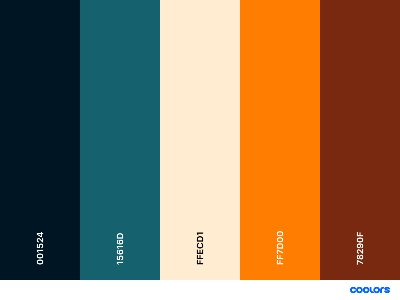

Website Planning Document
Color Scheme
The application of the colors are as follow:
- #001524: heading and footer.
- #15616D: navigation bar and "Website Planning Document" headings
- #FF7D00: navigation hover.
- color white: fonts color for the header, footer and navigation items.
- color black: main fonts.
- light blue, yellow, black and white: logo colors.